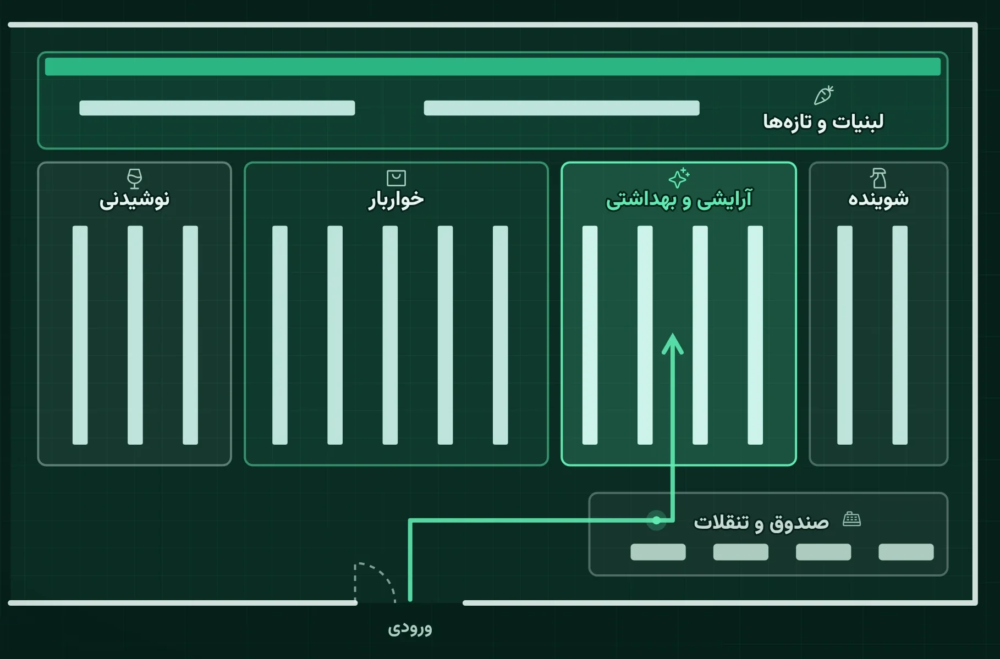
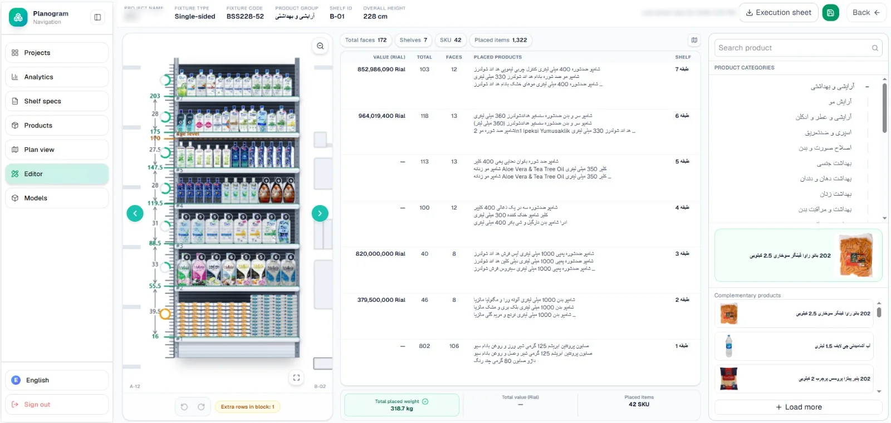
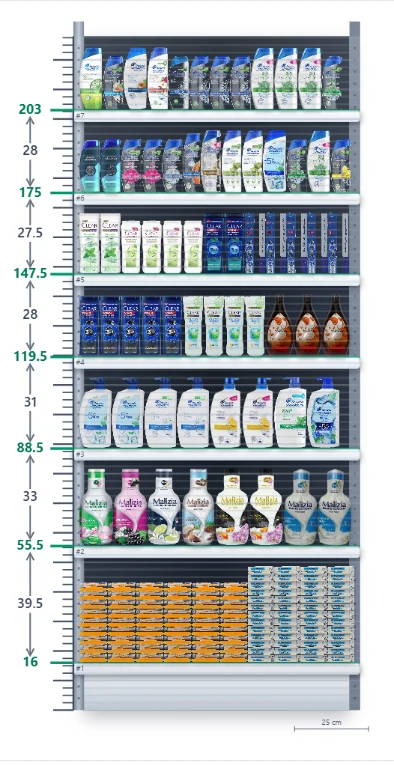
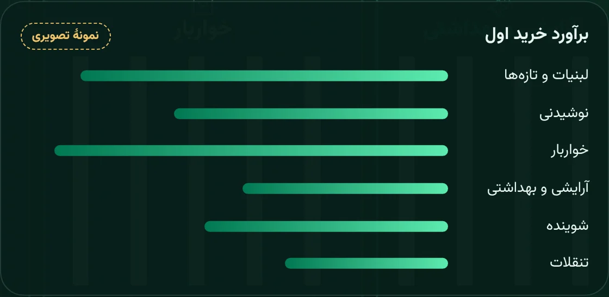
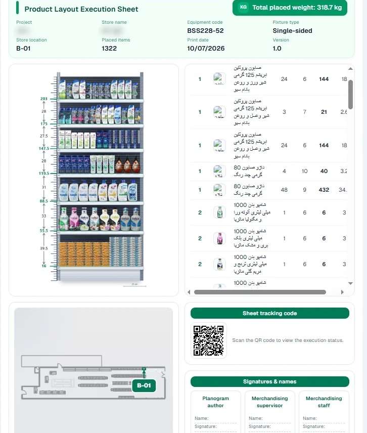
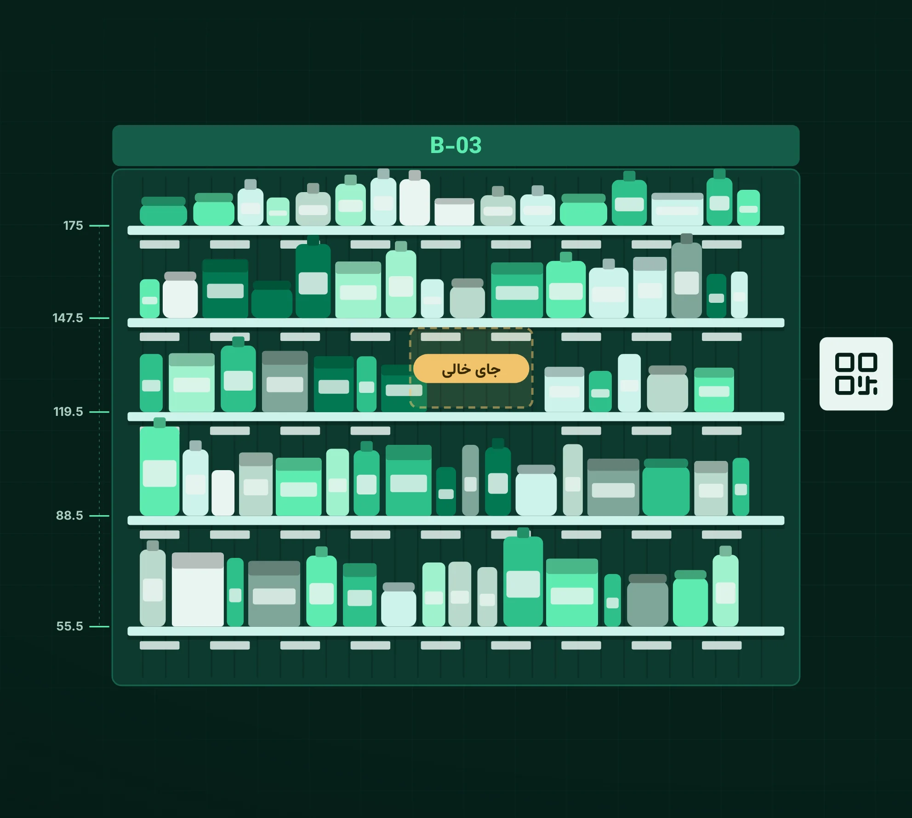
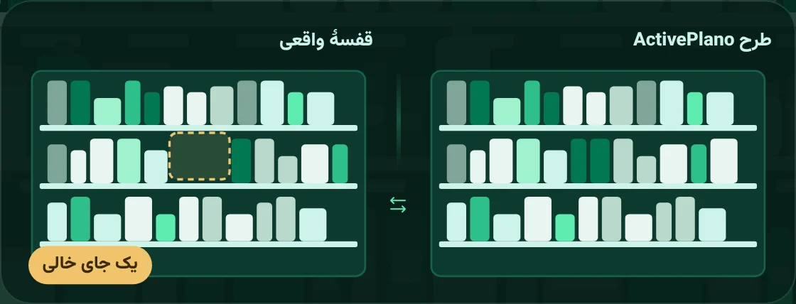
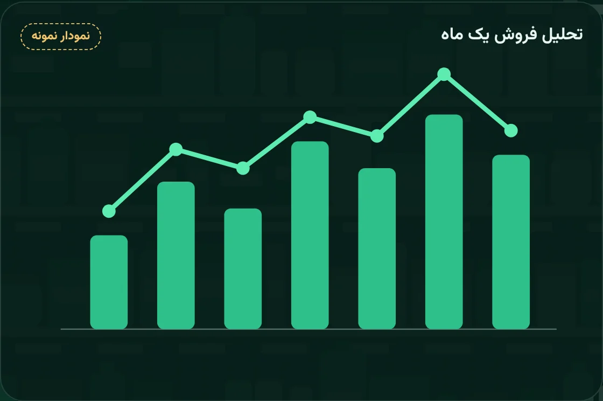

دموی مراحل کار پلانوگرام با ActivePlano، قدمبهقدم و با تصویر.
اولین نرمافزار پلانوگرام فروشگاهی در ایرانپلانوگرام یعنی نقشهای که نشان میدهد هر کالا دقیقاً کجای قفسه باشد. ActivePlano این نقشه را برای کل فروشگاه میسازد، اجرا و کنترل میکند.
نقشهٔ فروشگاه را بارگذاری میکنید و هر گروه کالا بخش خودش را میگیرد.
کالاها طبقهبهطبقه و با اندازهٔ دقیق روی قفسه چیده میشوند.
قبل از خرید میدانید برای پر کردن قفسهها چه کالایی لازم است.
برای هر قفسه یک برگه چاپ میشود؛ کارکنان از روی آن میچینند.
با اسکن QR معلوم میشود قفسه مثل طرح چیده شده یا نه.
فروش یک ماه بررسی میشود و چیدمان با عدد بهتر میشود.
نقشهٔ فروشگاه را در نرمافزار بارگذاری میکنید. هر گروه کالا، مثل لبنیات یا شوینده، بخش ثابت خودش را میگیرد.
کالاها را روی هر طبقه میچینید، با اندازهٔ دقیق طبقه به سانتیمتر.


بعد از پلانوگرام، فهرست کلی کالایی که برای پر کردن قفسهها لازم است آماده میشود.

برای هر قفسه یک برگه چاپ میشود و کارکنان دقیقاً از روی همین برگه میچینند.

با اسکن QR برگه میبینید چیدمان انجام شده یا نه، و قفسهٔ واقعی را کنار طرح مقایسه میکنید.


فروش یک ماه فروشگاه شما را بررسی میکنیم و میگوییم کدام کالا به جای بهتری نیاز دارد.
در پلنهای VIP و Franchise
نمودار نمونه